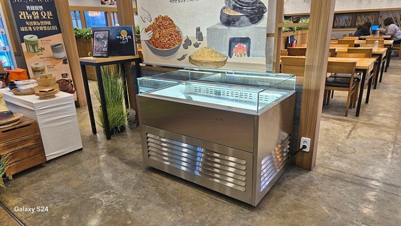
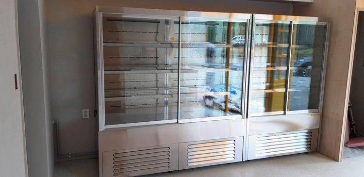
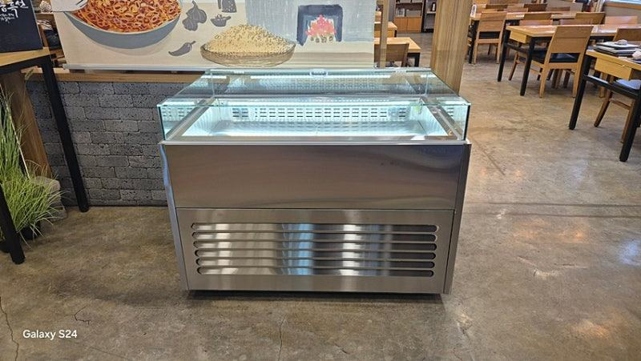
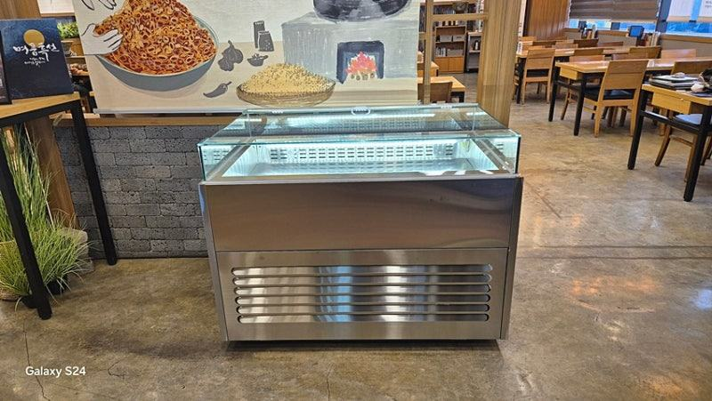
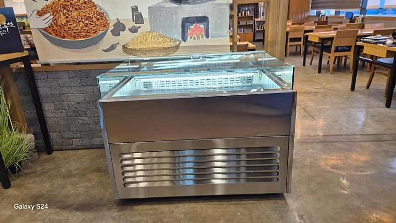

반찬(진열)쇼케이스
반찬쇼케이스 수명, 오래 쓰는 매장이 지키는 습관

반찬쇼케이스 수명은 매장 진열량에 맞는 크기로 들였는지, 그리고 콤프레셔 주변 먼지와 내부 적재량을 꾸준히 관리하는지에서 크게 갈립니다. 몇 년을 쓰느냐는 제품과 환경에 따라 다르지만, 같은 장비라도 관리 습관에 따라 고장 빈도가 확연히 달라집니다.
안녕하세요. 반찬가게 진열 냉장고를 매장 크기에 맞춰 제작하는 한성쇼케이스입니다.
"반찬쇼케이스는 보통 몇 년 쓰나요?" 창업 상담에서도, 교체 상담에서도 자주 받는 질문입니다. 솔직히 말씀드리면 정해진 숫자는 없습니다.
같은 시기에 들인 장비도 어떤 매장은 큰 탈 없이 쓰고, 어떤 매장은 여러 번 수리를 받습니다.
차이는 대부분 처음 고를 때와 매일 쓰는 방식에서 납니다. 반찬쇼케이스는 하루에도 수십 번 문이 열리고, 국물과 양념이 있는 상품을 담기 때문에 다른 냉장 진열장보다 손이 더 가는 장비입니다.
오늘은 반찬쇼케이스를 오래 쓰는 매장들의 공통점을 고를 때와 쓸 때로 나눠 정리해 보겠습니다.
1. 처음부터 진열량에 맞는 크기로
수명은 고르는 순간부터 시작됩니다. 진열할 반찬 양보다 너무 작은 쇼케이스를 들이면 매일 꽉 채워 쓰게 되고, 냉기가 돌 길이 막혀 장비가 쉬지 못합니다.
반대로 너무 크면 칸이 비어 보여 진열이 초라해집니다.
공간이 좁은 매장이라면 폭을 억지로 줄이기보다 높이를 2~3단으로 올려 진열량을 확보하는 방법이 있습니다.
같은 바닥 면적에서 더 많이 담을 수 있어 각 칸에 여유를 남기기 쉽습니다.
- 하루 진열할 반찬 가짓수를 먼저 적어 보세요.
- 공간이 좁으면 높이로 진열량을 확보하세요.
2. 콤프레셔 주변 먼지
오래 쓰는 매장들이 공통으로 지키는 습관이 콤프레셔와 응축기 주변 먼지 청소입니다. 이곳에 먼지가 쌓이면 열이 잘 빠지지 않아 장비가 더 오래, 더 세게 돌아가고 부품 부담이 커집니다.
반찬가게는 조리 중 기름기와 양념 냄새가 섞인 공기가 돌기 때문에 먼지가 끈적하게 달라붙기 쉽습니다.
하부 통풍구를 정기적으로 털어 주고, 그 앞에 박스나 용기를 쌓아 두지 마세요.
청소 날을 따로 정해 두지 않으면 바쁜 영업 중에 계속 미루게 됩니다. 정기 휴무일이나 월초처럼 날짜를 정해 두고, 청소한 날을 쇼케이스 옆에 적어 두는 매장일수록 장비 상태가 오래 유지됩니다.


3. 가득 채우지 않는 적재 습관
상품이 많다고 쇼케이스를 끝까지 채우면 냉장 성능이 크게 떨어집니다. 전체 용량의 60~70% 정도만 채워 냉기가 돌 공간을 남겨 두는 것이 장비에도, 반찬 신선도에도 좋습니다.
국물 있는 반찬은 뚜껑 있는 용기나 깊은 트레이에 담아 흘러넘치지 않게 해 주세요. 흘린 국물과 양념이 하부 배수 쪽으로 들어가면 냄새와 막힘의 원인이 되고, 금속 부분 부식도 앞당깁니다.
- 적재량은 여유 있게
- 국물 반찬은 뚜껑 용기에
- 흘린 국물은 바로 닦기
4. 고장 전에 보내는 신호
갑자기 멈추는 경우도 있지만 대부분은 미리 신호를 보냅니다. 평소보다 가동 소리가 커지거나 끊겼다 이어지기를 반복할 때, 설정 온도까지 내려가는 시간이 길어질 때, 문 패킹이 들떠 냉기가 새는 느낌이 들 때는 점검을 받아 보시는 것이 좋습니다.
작은 신호를 놓치고 계속 쓰면 결국 큰 부품 고장으로 이어지기 쉽습니다. 이상을 느끼신 날짜와 증상을 적어 두시면 A/S 기사님이 원인을 찾는 데도 도움이 됩니다.
체크리스트
- 진열량에 맞는 크기와 단수
- 콤프레셔·통풍구 먼지 청소
- 통풍구 앞 적재물 정리
- 여유 있는 적재량
- 국물 반찬 용기와 즉시 청소
- 소음·온도·패킹 이상 신호 기록
현장에서 자주 보는 경우: 쓰임새에 맞지 않는 크기를 들인 반찬가게
반찬가게 상담에서 자주 보는 것은 쓰임새와 맞지 않는 크기를 들인 경우입니다. 너무 크면 아무리 채워도 텅 비어 보여 손님 눈길을 끌지 못하고, 너무 작으면 매일 넘치게 채워 쓰게 됩니다.
그래서 진열할 상품에 맞춰 용량을 정하고, 공간이 좁은 매장은 높이를 2~3단으로 올려 같은 공간에서 더 많은 반찬을 배치하도록 제안합니다.
색상도 화이트로 화사하게, 블랙으로 차별화하는 식으로 매장에 맞춰 고르시면 됩니다. 매장 규모와 쓰임새에 맞게 제작하면 쓰기 편할 뿐 아니라 장비를 무리하게 돌리지 않아 오래 쓰는 데도 유리합니다.





자주 묻는 질문
반찬쇼케이스는 몇 년마다 교체해야 하나요?
정해진 교체 주기는 없습니다. 사용 환경과 관리 상태에 따라 크게 달라지니, 수리 빈도가 잦아지고 온도 유지가 어려워질 때 교체를 검토해 보세요.
콤프레셔 청소는 직접 해도 되나요?
전원을 끈 상태에서 하부 통풍구 바깥쪽 먼지를 부드러운 솔로 털어 내는 정도는 직접 하셔도 됩니다. 내부 부품을 분해해야 하는 청소는 A/S를 통해 받으시는 것이 안전합니다.
오래된 쇼케이스를 고쳐 쓸지 바꿀지 고민입니다.
부품 수급이 되는지, 같은 고장이 반복되는지, 매장 진열량에 크기가 맞는지를 함께 보세요. 세 가지 중 둘 이상이 어긋난다면 교체 쪽이 결과적으로 부담이 덜할 수 있습니다.
매장 조건에 맞춰 만드는 한성쇼케이스
원하시는 제품 사진과 설치할 공간 사진만 보내 주셔도 매장에 맞는 구성을 추천해 드립니다.
- 전국 240여 개 A/S 전담 센터 운영
- 본사 대량 자재 매입으로 품질 대비 합리적인 가격
- 유럽제·삼성 냉각 콤프레셔 적용
- 국내 최초 쇼케이스 전문 디자이너 상주
매장 폭과 원하는 진열 구성을 알려 주세요. 실측과 견적을 안내해 드립니다.
031-986-2458